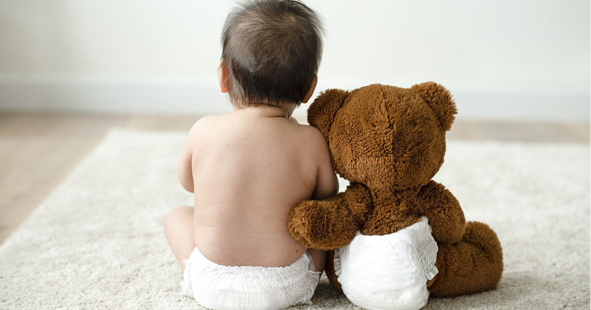
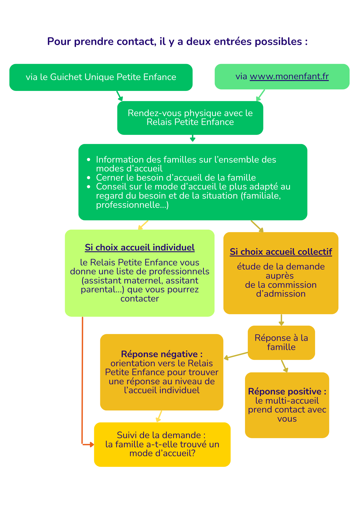
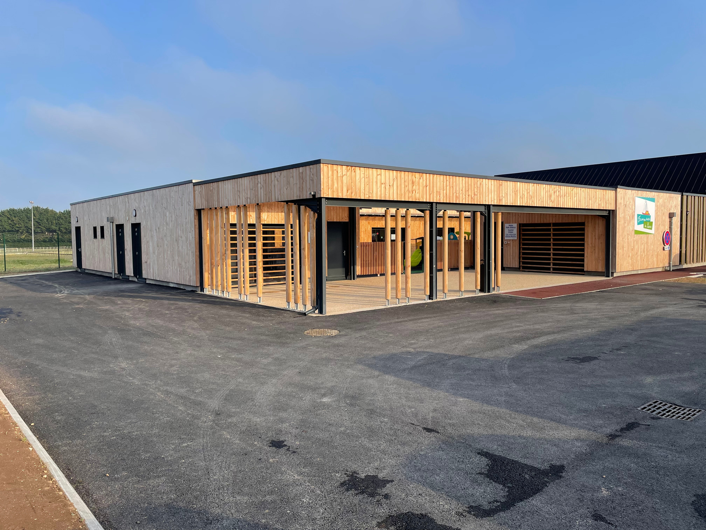
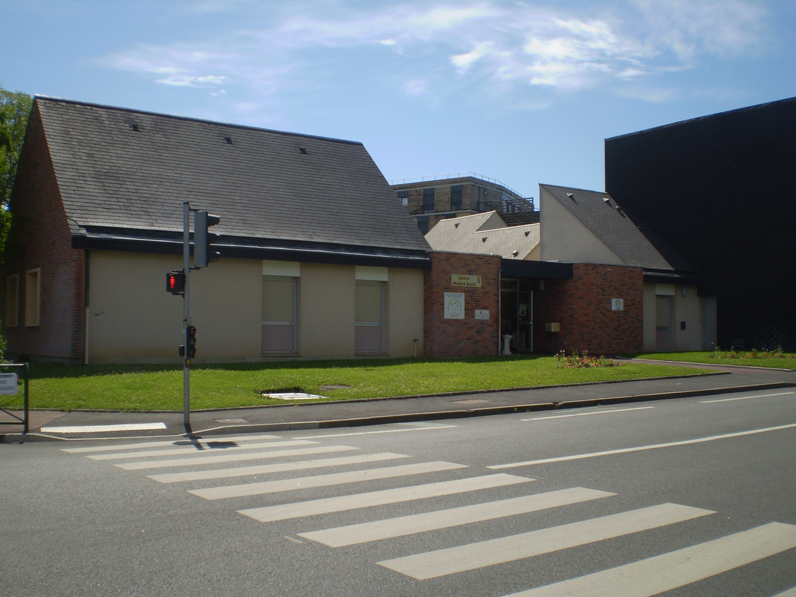
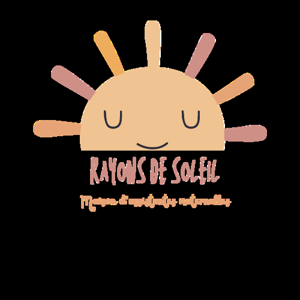
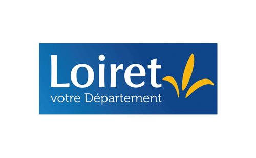

Petite enfance (0-5 ans)
"Il faut tout un village pour élever un enfant." - Proverbe africain
"J'avance à mon propre rythme et je développe toutes mes facultés en même temps : pour moi, tout est langage, corps, jeu, expérience." - Charte nationale pour l'accueil du jeune enfant
Guichet Unique de la Petite Enfance (RPE)

Vous êtes parent ou sur le point de le devenir ? Vous recherchez un mode de garde / d’accueil pour votre enfant âgé de 0 à 4 ans ? Bénéficiez d’un accompagnement individualisé, sur rendez-vous, pour votre recherche d’un mode d’accueil . Le Guichet Unique de la Petite Enfance (animé par le Relais Petite Enfance) a pour mission d’informer les parents et futurs parents sur les différents modes d’accueil disponibles. Il s’engage également à les accompagner dans leurs démarches.
Mar, Jeu 13h30-17h, Mer 9h-12h30 au Pôle Petite Enfance
39 avenue Yver-Bapterosses, 45250 Briare
📞 02 38 36 78 73
Lun, Ven 13h30-16h30, au Centre Médico-Social
1 rue de la Boyaudière, 45360 Châtillon-sur-Loire
📞 02 38 37 23 74
"id="Accueil-collectif">Accueil collectif
Le territoire dispose de deux structures d'accueil collectif labélisées "éveil et signes" avec un agrément délivré par la PMI. Elles accueillent des enfants âgés de 10 semaines à 4 ans révolus.


Multi-accueil Briare "Frimousses de Loire"
30 places réparties en 2 sections
12 bébés/moyens + 18 moyens/grands
3 mois - 4 ans
Pôle Petite Enfance
39, avenue Yver Bapterosses, Briare
📞 02 38 31 38 62
Lun-Ven : 7h30-18h30
📧 multiaccueil.briare@cc-berryloirepuisaye.fr
Multi-accueil Châtillon-sur-Loire "Frimousses de Loire"
16 places (âge mélangé)
3 mois - 4 ans
Centre Médico-social
1, rue de la Boyaudière, Châtillon-sur-Loire
📞 02 38 31 15 25
Lun-Ven : 7h00-18h00
📧 multiaccueil.chatillon@cc-berryloirepuisaye.fr
Maison d'Assistantes Maternelles (MAM)

MAM "Rayons de Soleil" - La Bussière
Le territoire dispose d'une MAM (Maison d'Assistantes Maternelles) associative sur la commune de La Bussière.
Deux assistantes maternelles agréées par la PMI vous accueillent du lundi au vendredi dans un local refait à neuf et adapté à un petit groupe d'enfants.
📍 Adresse : 11, route d'Escrignelles, 45230 LA BUSSIÈRE
👥 Contacts :
Nathalie Depardieu : 📞 06 50 15 35 75
Julie Aufrère : 📞 06 59 76 57 09
📧 mamrayonsdesoleil@gmail.fr
Accueil individuel avec le Relais Petite Enfance (RPE)
Orientation, information et animation pour les parents et les assistants maternels
Le RPE vous accompagne dans la recherche d'assistants maternels agréés
L'accueil est dit individuel lorsque votre enfant est accueilli chez un assistant maternel ou confié à un assistant parental (anciennement garde à domicile).
L'assistant maternel
L'assistant maternel employé par un particulier est une personne agréée, suivie et formée par le Conseil départemental via la PMI pour l'accueil simultané de quatre enfants maximum à son domicile.
Il a environ 60 professionnels agréés sur les vingt communes du territoire
La liste des assistants maternels agréés est disponible sur demande au Relais Petite Enfance, sur le site de la Communauté de communes www.cc-berryloirepuisaye.fr et sur www.monenfant.fr
L'assistant maternel - Les gardes à domicile
L'assistant parental est un employé de maison qui garde le ou les enfants au domicile des parents. Il peut s'agir que d'une seule famille faisant garder un ou plusieurs enfants ou de plusieurs familles se regroupant pour partager les frais.
Dans ce dernier cas, appelé garde partagée, la garde peut se faire alternativement chez chaque famille ou une exclusivement.
Permanence Briare
Mardi au jeudi de 13h30 à 17h30
Pôle Petite Enfance
39, avenue Yver Bapterosses
📞 02 38 36 78 73
Permanence Châtillon-sur-Loire
Lundi et vendredi de 13h30 à 16h30
Centre Médico-social
1, rue de la Boyaudière
📞 02 38 37 23 74
La Marelle - Lieu d'accueil enfants-parents (LAEP)
Un espace convivial et ludique pour les enfants de moins de six ans accompagnés d'un parent ou d'un adulte référent. Idéal pour le jeu et la socialisation des enfants, il est aussi un espace de paroles gratuit et anonyme pour les parents.
Tous les mercredis de 9h15 à 11h45
au Pôle Petite Enfance à Briare
Tous les mercredis de 15h00 à 17h30
à la salle des Fêtes d'Ouzouër-sur-Trézée
Tous les jeudis de 15h00 à 17h30
au Centre médico-social à Châtillon-sur-Loire


PMI - Consultations et ateliers

Au sein de chaque ADS, les équipes du service de Protection Maternelle et Infantile (PMI) assurent des missions de promotion de la santé et de prévention auprès des femmes enceintes, des enfants jusqu'à 6 ans, et de leur famille. La PMI est en outre chargée du suivi des modes d'accueil du jeune enfant et assure également les bilans de santé en école maternelle.
Consultations médicales et de puériculture prises en charge par le Département
Selon les consultations, vous pourrez rencontrer :
- une infirmière puéricultrice ou une auxiliaire de puériculture pour échanger et obtenir des conseils pour votre enfant (0-6 ans) à propos de divers sujets : alimentations, croissance (pesée), sommeil, éveil, développement....
- un médecin pour le suivi médical de votre enfant autour de la santé, des examens obligatoires et la vaccination.

Consultation médicale :
• 1er lundi de 9h00 à 17h00
• 3ème lundi du mois de 9h00 à 13h00
au Centre Médico-social de Briare
(6 rue des Grands Jardins)
Permanence de puéricultrice :
• 2ème vendredi de 9h00 à 11h30
au Centre Médico-social de Briare
• 4ème vendredi de 9h00 à 11h30
à la Maison Médicale de Bonny-sur-Loire
📞 Pour prendre rendez-vous du lundi au vendredi : 02 38 05 23 65
Atelier manipulation enfants-parents
Ce sont des ateliers gratuits : des activités de manipulation permettant aux enfants de 1 à 3 ans de découvrir, expérimenter, explorer des textures, des couleurs, le froissement, le transvasement, l’encastrement, ...

Les activités et les textures naturelles évoluent au fil des saisons : sable magie, semoule, terre, fleurs, eau, feuilles... le matériel utile et simple et vous permet de reproduire facilement l’activité à la maison
Bienfaits pour votre enfant : Ces activité permettent de développer sa confiance en lui et autre, sa motricité fine, son autonomie, sa concentration, tous ses sens...
C’est un moment privilégié enfant-parent : ces temps d’échanges et de plaisirs vous permettent de le valoriser, l’encourager et le sécuriser pour l’ouvrir sur l’extérieur et aller vers la découverte.
Tous les 2e vendredis du mois de 9h30 à 11h30
Au Pôle Petite enfance
39 avenue Yver Bapterosses, Briare
📞 06 23 59 73 28
Focus sur La Bulle Musicale
Installée au cœur de la salle du Relais Petite enfance au sein du Pôle Petite enfance depuis fin 2022, la Bulle Musicale est un équipement utilisé par les professionnels des multi-accueils, du Relais Petite enfance, les accueillantes de la Marelle et les parents qui fréquentent ce lieu d'accueil enfants parents.
Véritable cocon, c'est un endroit que les enfants aiment explorer seuls ou accompagnés, pour se défouler ou se ressourcer.
L'ensemble des équipes du service Petite enfance a été formé pour exploiter la plus value de cette Bulle dont le principe est de créer des rituels et du langage autour de ces rituels.
Découverte musicale, contes musicaux, lotos sonores et autres possibilités de s'enregistrer pour entendre sa voix ou celles rassurantes des gens qu'on aime, la Bulle est avant tout un lieu d'exploration et de réconfort.
Pour les enfants de moins de 7 ans - GRATUIT
Mercredis de 9h15 à 11h45
Pôle Petite Enfance - 39, avenue Yver Bapterosses, Briare
📞 02 38 36 78 73